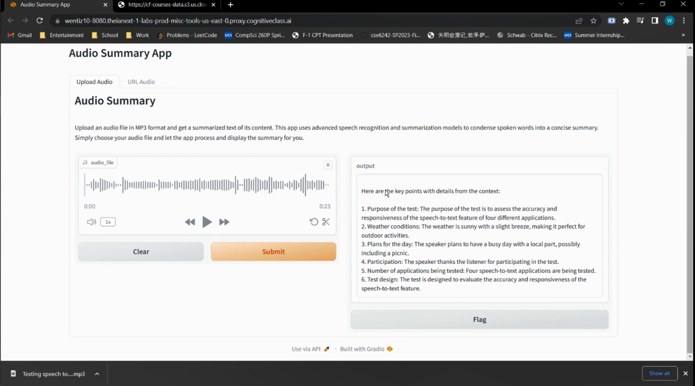

AudioSummary
AI-enhanced audio summarization

AI-enhanced audio summarization

AI-powered image caption generator
Personalized trip planner web-based
Personalized nutrition planning mobile app

Personalized nutrition planning mobile app